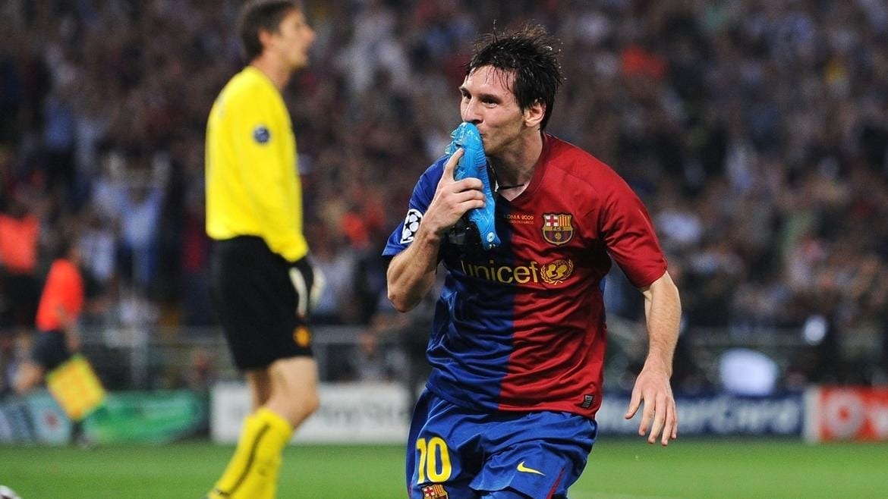
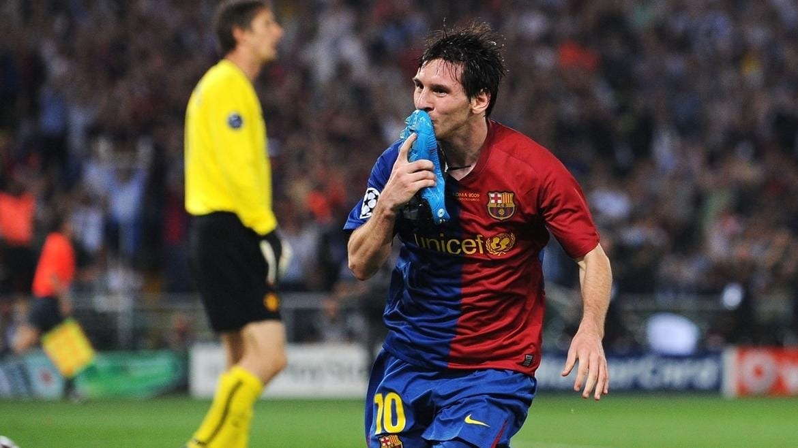

Lionel Messi
 

Lionel Messi, ampliamente considerado como uno de los mejores futbolistas de todos los tiempos, dejó una huella imborrable en el FC Barcelona durante sus más de dos décadas en el club. Desde sus humildes inicios en La Masia, Messi mostró destellos de genialidad que pronto lo catapultaron al primer equipo. Como jugador en el Barcelona (2000-2021) Messi se unió al FC Barcelona en 2000, ingresando en La Masia a la edad de 13 años. Su talento excepcional y su habilidad innata con el balón rápidamente lo hicieron destacar. Hizo su debut oficial con el primer equipo en 2004, y desde entonces, su carrera se llenó de éxitos y logros sin precedentes. Triunfos grupales: La Liga (10 veces): Messi fue una pieza clave en la obtención de diez títulos de La Liga, contribuyendo con su capacidad goleadora y su visión de juego. Copa del Rey (7 veces): Ganó siete Copas del Rey, mostrando su habilidad en los momentos decisivos de las competiciones nacionales. Supercopa de España (8 veces): Ayudó al Barcelona a conseguir ocho Supercopas de España, destacándose en los partidos cruciales. Liga de Campeones de la UEFA (4 veces): Messi jugó un papel fundamental en las cuatro victorias del Barcelona en la Liga de Campeones, en 2006, 2009, 2011 y 2015, anotando en dos de las finales. Supercopa de la UEFA (3 veces): Ganó tres Supercopas de la UEFA, subrayando el dominio del Barcelona en Europa. Copa Mundial de Clubes de la FIFA (3 veces): Contribuyó a las tres victorias del Barcelona en la Copa Mundial de Clubes, consolidando su posición como el mejor equipo del mundo en esos años. Triunfos individuales: Balón de Oro (7 veces): Messi ha ganado el Balón de Oro en siete ocasiones, un récord que destaca su estatus como el mejor jugador del mundo. Bota de Oro (6 veces): Fue el máximo goleador de las ligas europeas en seis temporadas, demostrando su consistencia y capacidad goleadora. Máximo Goleador de La Liga (8 veces): Ganó el Trofeo Pichichi como máximo goleador de La Liga en ocho temporadas. Máximo Goleador de Todos los Tiempos del Barcelona: Con más de 600 goles oficiales para el club, Messi se convirtió en el máximo goleador de la historia del Barcelona. Messi no solo acumuló títulos y trofeos, sino que también redefinió el fútbol moderno con su estilo de juego único, su capacidad para driblar y su visión para asistir a sus compañeros. Su impacto en el Barcelona fue profundo, transformando al equipo en una de las potencias del fútbol mundial y dejando un legado que perdurará por generaciones. A pesar de su partida del Barcelona en 2021, Lionel Messi siempre será recordado como el jugador más emblemático del club, un símbolo de excelencia y dedicación que elevó al FC Barcelona a nuevas alturas y dejó una marca indeleble en la historia del fútbol.